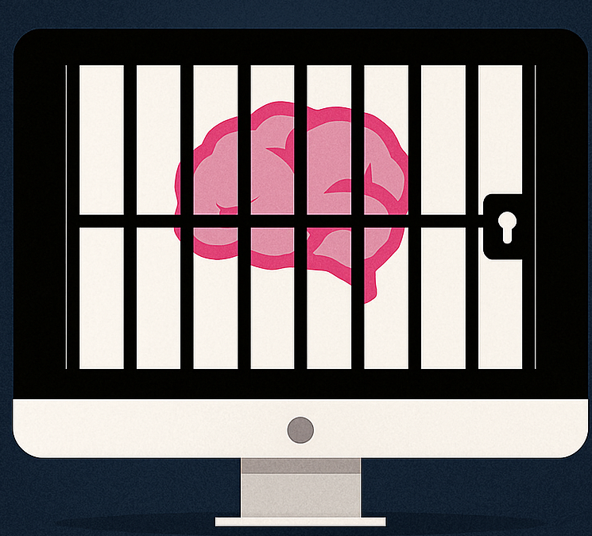

Locked In
Block distractions. Stay focused.
Focus Session
Block Apps
How to Use ▾
Getting Started
Add Applications
: Select programs you want to allow during focus sessions
Block Applications
: Add distracting apps to your block list
Set Duration
: Choose your focus period
Start Session
: Click to begin monitoring and blocking
Dark Mode
Light Mode
Duration (minutes):
Allowed Applications
+ Add Application
Start Focus Session
Stop Session
Blocked Applications
These apps will be automatically closed during focus sessions
+ Add to Block List